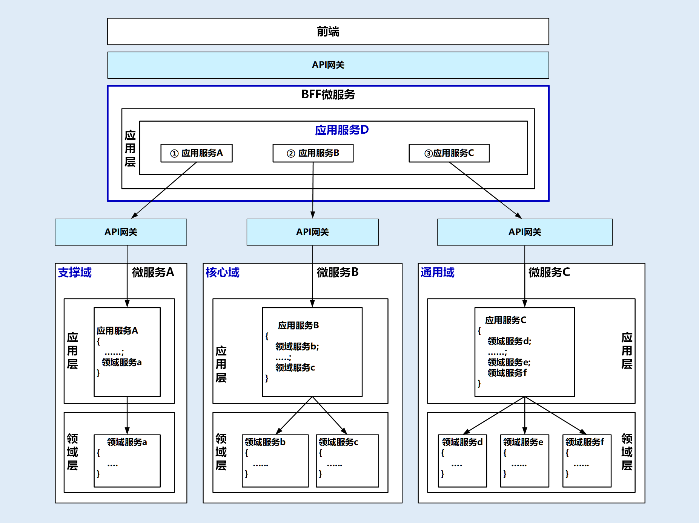
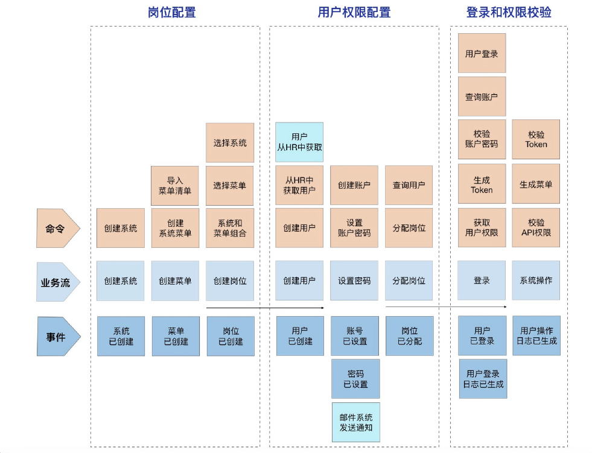

DDD实战课
07 | DDD分层架构：有效降低层与层之间的依赖
架构演化过程
各层
1.用户接口层
- 用户接口层负责向用户显示信息和解释用户指令。这里的用户可能是：用户、程序、自动化测试和批处理脚本等等。
2.应用层
- 应用层是很薄的一层，理论上不应该有业务规则或逻辑，主要面向用例和流程相关的操作。但应用层又位于领域层之上，因为领域层包含多个聚合，所以它可以协调多个聚合的服务和领域对象完成服务编排和组合，协作完成业务操作。
- 在设计和开发时，不要将本该放在领域层的业务逻辑放到应用层中实现。因为庞大的应用层会使领域模型失焦，时间一长你的微服务就会演化为传统的三层架构，业务逻辑会变得混乱。
- 另外，应用服务是在应用层的，它负责服务的组合、编排和转发，负责处理业务用例的执行顺序以及结果的拼装，以粗粒度的服务通过 API 网关向前端发布。还有，应用服务还可以进行安全认证、权限校验、事务控制、发送或订阅领域事件等。
3.领域层
- 领域层的作用是实现企业核心业务逻辑，通过各种校验手段保证业务的正确性。领域层主要体现领域模型的业务能力，它用来表达业务概念、业务状态和业务规则。
- 领域层包含聚合根、实体、值对象、领域服务等领域模型中的领域对象。
- 首先，领域模型的业务逻辑主要是由实体和领域服务来实现的，其中实体会采用充血模型来实现所有与之相关的业务功能。其次，你要知道，实体和领域对象在实现业务逻辑上不是同级的，当领域中的某些功能，单一实体（或者值对象）不能实现时，领域服务就会出马，它可以组合聚合内的多个实体（或者值对象），实现复杂的业务逻辑。
4.基础层
- 基础层是贯穿所有层的，它的作用就是为其它各层提供通用的技术和基础服务，包括第三方工具、驱动、消息中间件、网关、文件、缓存以及数据库等。比较常见的功能还是提供数据库持久化。
DDD 分层架构如何推动架构演进？
1.微服务架构的演进
- 实体或值对象的简单变更，一般不会让领域模型和微服务发生大的变化。但聚合的重组或拆分却可以。这是因为聚合内业务功能内聚，能独立完成特定的业务逻辑。那聚合的重组或拆分，势必就会引起业务模块和系统功能的变化了。
- 这里我们可以以聚合为基础单元，完成领域模型和微服务架构的演进。聚合可以作为一个整体，在不同的领域模型之间重组或者拆分，或者直接将一个聚合独立为微服务。
- 例子
- 当你发现微服务 1 中聚合 a 的功能经常被高频访问，以致拖累整个微服务 1 的性能时，我们可以把聚合 a 的代码，从微服务 1 中剥离出来，独立为微服务 2。这样微服务 2 就可轻松应对高性能场景。
- 在业务发展到一定程度以后，你会发现微服务 2 的领域模型有了变化，聚合 d 会更适合
放到微服务 1 的领域模型中。这时你就可以将聚合 d 的代码整体搬迁到微服务 1 中。如
果你在设计时已经定义好了聚合之间的代码边界，这个过程不会太复杂，也不会花太多
时间。 - 最后我们发现，在经历模型和架构演进后，微服务 1 已经从最初包含聚合 a、b、c，演
进为包含聚合 b、c、d 的新领域模型和微服务了。
2.微服务内服务的演进
在微服务内部，实体的方法被领域服务组合和封装，领域服务又被应用服务组合和封装。在服务逐层组合和封装的过程中，你会发现这样一个有趣的现象。
在服务设计时，你并不一定能完整预测有哪些下层服务会被多少个上
层服务组装，因此领域层通常只提供一些原子服务，比如领域服务 a、b、c。但随着系统功能增强和外部接入越来越多，应用服务会不断丰富。有一天你会发现领域服务 b 和 c 同时多次被多个应用服务调用了，执行顺序也基本一致。这时你可以考虑将 b 和 c 合并，再将应用服务中 b、c 的功能下沉到领域层，演进为新的领域服务（b+c）。这样既减少了服务的数量，也减轻了上层服务组合和编排的复杂度。
怎样转向 DDD 分层架构呢？
- DDD 分层架构在用户接口层引入了 DTO，给前端提供了更多的可使用数据和更高的展示灵活性。
- DDD 分层架构对三层架构的业务逻辑层进行了更清晰的划分，改善了三层架构核心业务逻辑混乱，代码改动相互影响大的情况。DDD 分层架构将业务逻辑层的服务拆分到了应用层和领域层。应用层快速响应前端的变化，领域层实现领域模型的能力。
- 另外一个重要的变化发生在数据访问层和基础层之间。三层架构数据访问采用 DAO 方式；DDD 分层架构的数据库等基础资源访问，采用了仓储（Repository）设计模式，通过依赖倒置实现各层对基础资源的解耦。
- 仓储又分为两部分：仓储接口和仓储实现。仓储接口放在领域层中，仓储实现放在基础层。原来三层架构通用的第三方工具包、驱动、Common、Utility、Config 等通用的公共的资源类统一放到了基础层。
08 | 微服务架构模型：几种常见模型的对比和分析
整洁架构
又名“洋葱架构”。整洁架构的层就像洋葱片一样，它体现了分层的设计思想。
在整洁架构里，同心圆代表应用软件的不同部分，从里到外依次是领域模型、领域服务、应用服务和最外围的容易变化的内容，比如用户界面和基础设施。
图示
领域模型
- 领域模型实现领域内核心业务逻辑，它封装了企业级的业务规则。领域模型的主体是实体，一个实体可以是一个带方法的对象，也可以是一个数据结构和方法集合。
领域服务
- 领域服务实现涉及多个实体的复杂业务逻辑。
应用服务
- 应用服务实现与用户操作相关的服务组合与编排，它包含了应用特有的业务流程规则，封装和实现了系统所有用例。
最外层
最外层主要提供适配的能力，适配能力分为主动适配和被动适配。
- 主动适配主要实现外部用户、网页、批处理和自动化测试等对内层业务逻辑访问适配。
- 被动适配主要是实现核心业务逻辑对基础资源访问的适配，比如数据库、缓存、文件系统和消息中间件等。
六边形架构
又名“端口适配器架构”。
六边形架构的核心理念
- 应用是通过端口与外部进行交互的。
图示
红圈内的核心业务逻辑（应用程序和领域模型）与外部资源（包括 APP、Web 应用以及数据库资源等）完全隔离，仅通过适配器进行交互。它解决了业务逻辑与用户界面的代码交错问题，很好地实现了前后端分离。六边形架构各层的依赖关系与整洁架构一样，都是由外向内依赖。
红圈内的六边形实现应用的核心业务逻辑；
外六边形完成外部应用、驱动和基础资源等的交互和访问，对前端应用以 API 主动适配的方式提供服务，对基础资源以依赖倒置被动适配的方式实现资源访问。
三种微服务架构模型的对比和分析
- 这三种架构都考虑了前端需求的变与领域模型的不变。
- 需求变幻无穷，但变化总是有矩可循的，用户体验、操作习惯、市场环境以及管理流程的变化，往往会导致界面逻辑和流程的多变。但总体来说，不管前端如何变化，在企业没有大的变革的情况下，核心领域逻辑基本不会大变，所以领域模型相对稳定，而用例和流程则会随着外部应用需求而随时调整。
- 架构模型通过分层的方式来控制需求变化从外到里对系统的影响，从外向里受需求影响逐步减小。面向用户的前端可以快速响应外部需求进行调整和发布，灵活多变，应用层通过服务组合和编排来实现业务流程的快速适配上线，减少传导到领域层的需求，使领域层保持长期稳定。
- 可以保证领域层的核心业务逻辑不会因为外部需求和流程的变动而调整，对于建立前台灵活、中台稳固的架构很有帮助。
从三种架构模型看中台和微服务设计
中台本质上是领域的子域，它可能是核心域，也可能是通用域或支撑域。通常大家认为阿里的中台对应 DDD 的通用域，将通用的公共能力沉淀为中台，对外提供通用共享服务。
- 中台建设要聚焦领域模型
- 中台需要站在全企业的高度考虑能力的共享和复用。
- 中台设计时，我们需要建立中台内所有限界上下文的领域模型，DDD 建模过程中会考虑架构演进和功能的重新组合。领域模型建立的过程会对业务和应用进行清晰的逻辑和物理边界（微服务）划分。领域模型的结果会影响到后续的系统模型、架构模型和代码模型，最终影响到微服务的拆分和项目落地。
- 微服务要有合理的架构分层
微服务设计要有分层的设计思想，让各层各司其职，建立松耦合的层间关系。
不要把与领域无关的逻辑放在领域层实现，保证领域层的纯洁和领域逻辑的稳定，避免污染领域模型。也不要把领域模型的业务逻辑放在应用层，这样会导致应用层过于庞大，最终领域模型会失焦。如果实在无法避免，我们可以引入防腐层，进行新老系统的适配和转换，过渡期完成后，可以直接将防腐层代码抛弃。
微服务之间的服务集成
项目级微服务
- 通常项目级微服务之间的集成，发生在微服务的应用层，由应用服务调用其它微服务发布在API 网关上的应用服务。
- 红色框内的应用服务 B，它除了可以组合和编排自己的领域服务外，还可以组合和编排外部微服务的应用服务。它只要将编排后的服务发布到 API 网关供前端调用，这样前端就可以直接访问自己的微服务了。
企业级中台微服务
- 企业级的业务流程往往是多个中台微服务一起协作完成的，那跨中台的微服务如何实现集成呢？
- 企业级中台微服务的集成不能像项目级微服务一样，在某一个微服务内完成跨微服务的服务组合和编排。
- 
- 我们可以在中台微服务之上增加一层，增加的这一层就位于红色框内，它的主要职能就是处理跨中台微服务的服务组合和编排，以及微服务之间的协调，它还可以完成前端不同渠道应用的适配。如果再将它的业务范围扩大一些，我可以将它做成一个面向不同行业和渠道的服务平台。
- BFF（服务于前端的后端，Backend for Frontends）。BFF 微服务与其它微服务存在较大的差异，就是它没有领域模型，因此这个微服务内也不会有领域层。BFF 微服务可以承担应用层和用户接口层的主要职能，完成各个中台微服务的服务组合和编排，可以适配不同前端和渠道的要求。
- 应用和资源的解耦与适配
- 传统以数据为中心的设计模式，应用会对数据库、缓存、文件系统等基础资源产生严重依赖。正是由于它们之间的这种强依赖的关系，我们一旦更换基础资源就会对应用产生很大的影响，因此需要为应用和资源解耦。
- 在微服务架构中，应用层、领域层和基础层解耦是通过仓储模式，采用依赖倒置的设计方法来实现的。在应用设计中，我们会同步考虑和基础资源的代码适配，那么一旦基础设施资源出现变更（比如换数据库），就可以屏蔽资源变更对业务代码的影响，切断业务逻辑对基础资源的依赖，最终降低资源变更对应用的影响。
09 | 中台：数字转型后到底应该共享什么？
中台源于平台，但它的战略高度要比平台高很多。
平台到底是不是中台？
阿里的中台
- 阿里业务中台的前身是共享平台，而原来的共享平台更多的被当作资源团队，他们承接各业务方的需求，并为业务方在基础服务上做定制开发。阿里业务中台的目标是把核心服务链路（会员、商品、交易、营销、店铺、资金结算等）整体当作一个平台产品来做，为前端业务提供的是业务解决方案，而不是彼此独立的系统。
传统企业大平台战略和阿里中台战略的差异
- 平台只是将部分通用的公共能力独立为共享平台。虽然可以通过 API 或者数据对外提供公共共享服务，解决系统重复建设的问题，但这类平台并没有和企业内的其它平台或应用，实现页面、业务流程和数据从前端到后端的全面融合，并且没有将核心业务服务链路作为一个整体方案考虑，各平台仍然是分离且独立的。
- 平台解决了公共能力复用的问题，但离中台的目标显然还有一段差距！
中台到底是什么？
阿里自己人对中台的定义
- “中台是一个基础的理念和架构，我们要把所有的基础服务用中台的思路建设，进行联通，共同支持上端的业务。业务中台更多的是支持在线业务，数据中台提供了基础数据处理能力和很多的数据产品给所有业务方去用。业务中台、数据中台、算法中台等等一起提供对上层业务的支撑。”
思特沃克对中台的定义
- “中台是企业级能力复用平台。”
中台的关键词
综上，我们可以提炼出几个关于中台的关键词：共享、联通、融合和创新。
- 联通是前台以及中台之间的联通，融合是前台流程和数据的融合，并以共享的方式支持前端一线业务的发展和创新。
中台来源于平台，但中台和平台相比，它更多体现的是一种理念的转变，它主要体现在这三个关键能力上：对前台业务的快速响应能力；企业级复用能力；从前台、中台到后台的设计、研发、页面操作、流程服务和数据的无缝联通、融合能力。
数字化转型中台应该共享什么？
传统企业的中台建设策略
- 由于渠道多样化，传统企业不仅要将通用能力中台化，以实现通用能力的沉淀、共享和复用，这里的通用能力对应 DDD 的通用域或支撑域；传统企业还需要将核心能力中台化，以满足不同渠道的核心业务能力共享和复用的需求，避免传统核心和互联网不同渠道应用出现“后端双核心、前端两张皮”的问题，这里的核心能力对应 DDD 的核心域。
- 这就属于业务中台的范畴了，我们需要解决核心业务链路的联通和不同渠道服务共享的问题。除此之外，我们还需要解决系统微服务拆分后的数据孤岛、数据融合和业务创新等问题，这就属于数据中台的范畴了，尤其是当我们采用分布式架构以后，我们就更应该关注微服务拆分后的数据融合和共享问题了。
- 综上，在中台设计和规划时，我们需要整体考虑企业内前台、中台以及后台应用的协同，实现不同渠道应用的前端页面、流程和服务的共享，还有核心业务链路的联通以及前台流程和数据的融合、共享，支持业务和商业模式的创新。
如何实现前中后台的协同？
如果把业务中台比作陆军、火箭军和空军等专业军种的话，它主要发挥战术专业能力。前台就是作战部队，它需要根据前线的战场需求，对业务中台的能力进行调度，实现能力融合和效率最大化。而数据中台就是信息情报中心和联合作战总指挥部，它能够汇集各种数据、完成分析，制定战略和战术计划。后台就是后勤部队，提供技术支持。
- 前台
- 中台后的前台建设要有一套综合考虑业务边界、流程和平台的整体解决方案，以实现各不同中台前端操作、流程和界面的联通、融合。不管后端有多少个中台，前端用户感受到的就是只有一个前台。
- 前端页面可以很自然地融合到不同的终端和渠道应用核心业务链路中，实现前端页面、流程和功能复用。
- 中台
业务中台的建设可采用领域驱动设计方法，通过领域建模，将可复用的公共能力从各个单体剥离，沉淀并组合，采用微服务架构模式，建设成为可共享的通用能力中台。
同样的，我们可以将核心能力用微服务架构模式，建设成为可面向不同渠道和场景的可复用的核心能力中台。 业务中台向前台、第三方和其它中台提供 API 服务，实现通用能力和核心能力的复用。
在将传统集中式单体按业务职责和能力细分为微服务，建设中台的过
程中，会产生越来越多的独立部署的微服务。这样做虽然提升了应用弹性和高可用能力，但由于微服务的物理隔离，原来一些系统内的调用会变成跨微服务调用，再加上前后端分离，微服务拆分会导致数据进一步分离，增加企业级应用集成的难度。如果没有合适的设计和指导思想，处理不好前台、中台和后台的关系，将会进一步加剧前台流程和数据的孤岛化、碎片化。
数据中台的建设
- 第一步实现各中台业务数据的汇集，解决数据孤岛和初级数据共享问题。
- 第二步实现企业级实时或非实时全维度数据的深度融合、加工和共享。
- 第三步萃取数据价值，支持业务创新，加速从数据转换为业务价值的过程。
- 后台
阿里对前台、中台和后台的定位。
- 前台主要面向客户以及终端销售者，实现营销推广以及交易转化；
- 中台主要面向运营人员，完成运营支撑；
- 后台主要面向后台管理人员，实现流程审核、内部管理以及后勤支撑，比如采购、人力、财务和 OA 等系统。
那对于后台，为了实现内部的管理要求，很多人习惯性将这些管理要求嵌入到核心业务流程中。而一般来说这类内控管理需求对权限、管控规则和流程等要求都比较高，但是大部分管理人员只是参与了某个局部业务环节的审核。这类复杂的管理需求，会凭空增加不同渠道应用前台界面和核心流程的融合难度以及软件开发的复杂度。
在设计流程审核和管理类功能的时候，我们可以考虑按角色或岗位进行功能聚合，将复杂的管理需求从通用的核心业务链路中剥离，参考小程序的建设模式，通过特定程序入口嵌入前台 APP 或应用中。
总结
- 前台通过页面和流程共享实现不同渠道应用之间的前台融合，中台通过 API 实现服务共享。而前台、业务中台和数据中台的融合可以实现传统应用与互联网应用的融合，从而解决“后端双核心、前端两张皮”的问题。能力复用了，前台流程和数据融合了，才能更好地支持业务的融合和商业模式的创新。
10 | DDD、中台和微服务：它们是如何协作的？
开头
- DDD 有两把利器，那就是它的战略设计和战术设计方法。
- 中台在企业架构上更多偏向业务模型，形成中台的过程实际上也是业务领域不断细分的过程。在这个过程中我们会将同类通用的业务能力进行聚合和业务重构，再根据限界上下文和业务内聚的原则建立领域模型。而 DDD 的战略设计最擅长的就是领域建模。
DDD 的本质
中台的本质
- 中台来源于阿里的中台战略（详见《企业 IT 架构转型之道：阿里巴巴中台战略思想与架构实战》钟华编著）。
- 2015 年年底，阿里巴巴集团对外宣布全面启动中台战略，构建符合数字时代的更具创新性、灵活性的“大中台、小前台”组织机制和业务机制，即作为前台的一
线业务会更敏捷、更快速地适应瞬息万变的市场，而中台将集合整个集团的运营数据能力、产品技术能力，对各前台业务形成强力支撑。 - 中台的本质其实就是提炼各个业务板块的共同需求，进行业务和系统抽象，形成通用的可复用的业务模型，打造成组件化产品，供前台部门使用。前台要做什么业务，需要什么资源，可以直接找中台，不需要每次都去改动自己的底层。
DDD、中台和微服务的协作模式
中台如何建模？
- 中台业务抽象的过程就是业务建模的过程，对应 DDD 的战略设计。系统抽象的过程就是微服务的建设过程，对应 DDD 的战术设计。
- 第一步：按照业务流程（通常适用于核心域）或者功能属性、集合（通常适用于通用域或支撑域），将业务域细分为多个中台，再根据功能属性或重要性归类到核心中台或通用中台。核心中台设计时要考虑核心竞争力，通用中台要站在企业高度考虑共享和复用能力。
- 第二步：选取中台，根据用例、业务场景或用户旅程完成事件风暴，找出实体、聚合和限界上下文。依次进行领域分解，建立领域模型。
- 第三步：以主领域模型为基础，扫描其它中台领域模型，检查并确定是否存在重复或者需要重组的领域对象、功能，提炼并重构主领域模型，完成最终的领域模型设计。
- 第四步：选择其它主领域模型重复第三步，直到所有主领域模型完成比对和重构。
- 第五步：基于领域模型完成微服务设计，完成系统落地。
- 图例
11 | DDD实践：如何用DDD重构中台业务模型？
传统企业应用分析
- 核心能力的重复建设。
- 通用能力的重复建设。
- 业务职能的分离建设。
- 互联网电商平台和传统核心功能前后完全独立建设。
如何构建中台业务模型？
- 自顶向下的策略
自顶向下的策略适用于全新的应用系统建设，或旧系统推倒重建的情况。
这种策略是先做顶层设计，从最高领域逐级分解为中台，分别建立领域模型，根据业务属性分为通用中台或核心中台。领域建模过程主要基于业务现状，暂时不考虑系统现状。
主要步骤
- 第一步是将领域分解为子域，子域可以分为核心域、通用域和支撑域；
- 第二步是对子域建模，划分领域边界，建立领域模型和限界上下文；
- 第三步则是根据限界上下文进行微服务设计。
- 自底向上的策略
自底向上策略适用于遗留系统业务模型的演进式重构。
这种策略是基于业务和系统现状完成领域建模。首先分别完成系统所在业务域的领域建模；然后对齐业务域，找出具有同类或相似业务功能的领域模型，对比分析领域模型的差异，重组领域对象，重构领域模型。这个过程会沉淀公共和复用的业务能力，会将分散的业务模型整合。
主要步骤
第一步：锁定系统所在业务域，构建领域模型。
- 传统核心共构建了八个领域模型。
- 其中用户域构建了用户认证和权限两个领域模型，客户域构建了个人和团体两个领域模型，传统收付构建了 POS 刷卡领域模型，承保域构建了定报价、投保和保单管理三个领域模型。
- 互联网电商构建了报价、投保、订单、客户、用户认证和移动收付六个领域模型。
第二步：对齐业务域，构建中台业务模型。
=====》
初步结论：传统核心面向企业内大部分应用，大而全，领域模型相对完备，而互联网电商面向单一渠道，领域模型相对单一。
首先我们可以将传统核心的领域模型作为主领域模型，将互联网电商领域模型作为辅助模型来构建中台业务模型。然后再将互联网电商中重复的能力沉淀到传统核心的领域模型中，只保留自己的个性能力，比如订单。中台业务建模时，既要关注领域模型的完备性，也要关注不同渠道敏捷响应市场的要求。
总结
- “分域建模型，找准基准域，划定上下文，聚合重归类。”
第三步：中台归类，根据领域模型设计微服务。
总结
- 其实呢，中台业务模型的重构过程，也是微服务架构演进的过程。业务边界即微服务边界，业务边界做好了，微服务的边界自然就会很好。
12 | 领域建模：如何用事件风暴构建领域模型？
事件风暴
- 事件风暴是一项团队活动，领域专家与项目团队通过头脑风暴的形式，罗列出领域中所有的领域事件，整合之后形成最终的领域事件集合，然后对每一个事件，标注出导致该事件的命令，再为每一个事件标注出命令发起方的角色。命令可以是用户发起，也可以是第三方系统调用或者定时器触发等，最后对事件进行分类，整理出实体、聚合、聚合根以及限界上下文。而事件风暴正是 DDD 战略设计中经常使用的一种方法，它可以快速分析和分解复杂的业务领域，完成领域建模。
事件风暴需要准备些什么？
- 事件风暴的参与者
领域专家是事件风暴中必不可少的核心参与者。
寻找什么样的人来担当领域专家呢？
- 领域专家就是对业务或问题域有深刻见解的主题专家，他们非常了解业务和系统是怎么做的，同时也深刻理解为什么要这样设计。
- 如果你的公司里并没有这个角色，那也没关系，你可以从业务人员、需求分析人员、产品经理或者在这个领域有多年经验的开发人员里，按照这个标准去选择合适的人选。
- 除了领域专家，事件风暴的其他参与者可以是 DDD 专家、架构师、产品经理、项目经理、开发人员和测试人员等项目团队成员。
- 领域建模是统一团队语言的过程，因此项目团队应尽早地参与到领域建模中，这样才能高效建立起团队的通用语言。到了微服务建设时，领域模型也更容易和系统架构保持一致。
- 事件风暴要准备的材料
- 事件风暴参与者会将自己的想法和意见写在即时贴上，并将贴纸贴在墙上的合适位置，我们戏称这个过程是“刷墙”。所以即时贴和水笔是必备材料，另外，你还可以准备一些胶带或者磁扣，以便贴纸随时能更换位置。
- 事件风暴的场地
- 只需要一堵足够长的墙和足够大的空间就可以了。墙是用来贴纸的，大空间可以让人四处走动，方便合作。撤掉会议桌和椅子的事件风暴，你会发现参与者们的效率更高。
- 事件风暴分析的关注点
- 在领域建模的过程中，我们需要重点关注这类业务的语言和行为。
- 比如某些业务动作或行为（事件）是否会触发下一个业务动作，这个动作（事件）的输入和输出是什么？是谁（实体）发出的什么动作（命令），触发了这个动作（事件）…我们可以从这些暗藏的词汇中，分析出领域模型中的事件、命令和实体等领域对象。
如何用事件风暴构建领域模型？
领域建模的过程主要包括产品愿景、业务场景分析、领域建模和微服务拆分与设计这几个重要阶段。
- 产品愿景
产品愿景的主要目的是对产品顶层价值的设计，使产品目标用户、核心价值、差异化竞争点等信息达成一致，避免产品偏离方向。
产品愿景的参与角色：领域专家、业务需求方、产品经理、项目经理和开发经理。
提出问题
- 用户中台到底能够做什么？
- 它的业务范围、目标用户、核心价值和愿景，与其它同类产品的差异和优势在哪里？
愿景墙
- 业务场景分析
场景分析是从用户视角出发的，根据业务流程或用户旅程，采用用例和场景分析，探索领域中的典型场景，找出领域事件、实体和命令等领域对象，支撑领域建模。事件风暴参与者要尽可能地遍历所有业务细节，充分发表意见，不要遗漏业务要点。
场景分析的参与角色：领域专家、产品经理、需求分析人员、架构师、项目经理、开发经理和测试经理。
过程
- 我们可以按照业务流程，一步一步搜寻用户业务流程中的关键领域事件，比如岗位已创建，用户已创建等事件。
- 再找出什么行为会引起这些领域事件，这些行为可能是一个或若干个命令组合在一起产生的，比如创建用户时，第一个命令是从公司 HR 系统中获取用户信息，第二个命令是根据 HR 的员工信息在用户中台创建用户，创建完用户后就会产生用户已创建的领域事件。
- 当然这个领域事件可能会触发下一步的操作，比如发布到邮件系统通知用户已创建，但也可能到此就结束了，你需要根据具体情况来分析是否还有下一步的操作。
例子
- 用蓝色来表示命令，用橙色表示领域事件，用黄色表示补充信息，比如用户信息数据来源于 HR 系统的说明。
- 
- 领域建模
领域建模时，我们会根据场景分析过程中产生的领域对象，比如命令、事件等之间关系，找出产生命令的实体，分析实体之间的依赖关系组成聚合，为聚合划定限界上下文，建立领域模型以及模型之间的依赖。领域模型利用限界上下文向上可以指导微服务设计，通过聚合向下可以指导聚合根、实体和值对象的设计。
领域建模的参与角色：领域专家、产品经理、需求分析人员、架构师、项目经理、开发经理和测试经理。
具体步骤
第一步：从命令和事件中提取产生这些行为的实体。用绿色贴纸表示实体。通过分析用户中台的命令和事件等行为数据，提取了产生这些行为的用户、账户、认证票据、系统、菜单、岗位和用户日志七个实体。
第二步：根据聚合根的管理性质从七个实体中找出聚合根，比如，用户管理用户相关实体以及值对象，系统可以管理与系统相关的菜单等实体等，可以找出用户和系统等聚合根。然后根据业务依赖和业务内聚原则，将聚合根以及它关联的实体和值对象组合为聚合，比如系统和菜单实体可以组合为“系统功能”聚合。
第三步：划定限界上下文，根据上下文语义将聚合归类。根据用户域的上下文语境，用户基本信息和用户日志信息这两个聚合共同构成用户信息域，分别管理用户基本信息、用户登录和操作日志。认证票据和账户这两个聚合共同构成认证域，分别实现不同方式的登录和认证。系统功能和岗位这两个聚合共同构成权限域，分别实现系统和菜单管理以及系统的岗位配置。根据业务边界，我们可以将用户中台划分为三个限界上下文：用户信息、认证和权限。
到这里我们就完成了用户中台领域模型的构建了。那由于领域建模的过程中产生的领域对象实在太多了，我们可以借助表格来记录。
- 微服务拆分与设计
- 原则上一个领域模型就可以设计为一个微服务，但由于领域建模时只考虑了业务因素，没有考虑微服务落地时的技术、团队以及运行环境等非业务因素，因此在微服务拆分与设计时，我们不能简单地将领域模型作为拆分微服务的唯一标准，它只能作为微服务拆分的一个重要依据。
- 微服务的设计还需要考虑服务的粒度、分层、边界划分、依赖关系和集成关系。除了考虑业务职责单一外，我们还需要考虑将敏态与稳态业务的分离、非功能性需求（如弹性伸缩要求、安全性等要求）、团队组织和沟通效率、软件包大小以及技术异构等非业务因素。
- 用户中台微服务设计如果不考虑非业务因素，我们完全可以按照领域模型与微服务一对一的关系来设计，将用户中台设计为：用户、认证和权限三个微服务。但如果用户日志数据量巨大，大到需要采用大数据技术来实现，这时用户信息聚合与用户日志聚合就会有技术异构。虽然在领域建模时，我们将他们放在一个了领域模型内，但如果考虑技术异构，这两个聚合就不适合放到同一个微服务里了。我们可以以聚合作为拆分单位，将用户基本信息管理和用户日志管理拆分为两个技术异构的微服务，分别用不同的技术来实现它们。